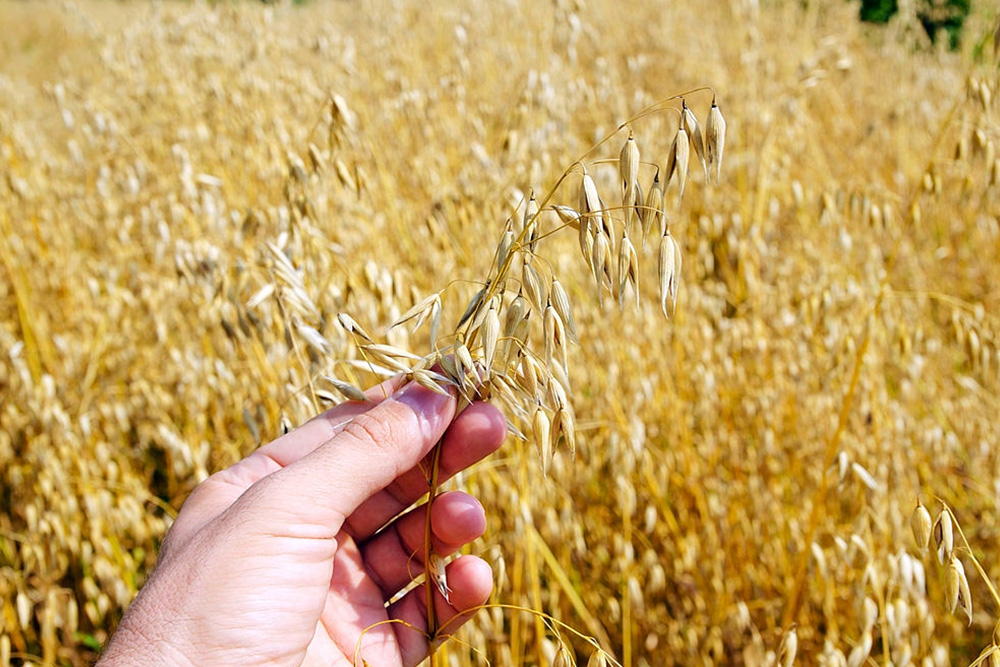
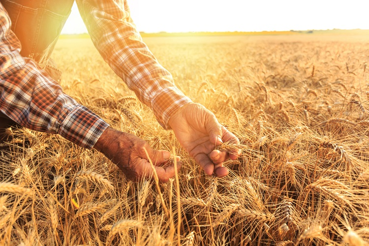

Plantio e Ciclo de Crescimento
Plantada na primavera ou outono, a aveia leva cerca de 4 a 5 meses para crescer e necessita de boa umidade especialmente no início é importante monitorar a umidade do solo, pois a aveia necessita de uma quantidade adequada de água.

Clima e Solo:
A aveia cresce melhor em climas temperados com temperaturas moderadas e boa umidade. Ela prefere solos bem drenados, férteis e ricos em matéria orgânica. A aveia é mais tolerante a solos ácidos do que muitos outros cereais, com um pH ideal entre 5,5 e 6,5. .

Características Físicas:
As flores do Amor-Perfeito são conhecidas por suas cores vibrantes e padrões distintos. Elas podem ter combinações de roxo, amarelo, branco e azul. As pétalas têm uma forma única, geralmente com três cores distintas, que lembram uma face.